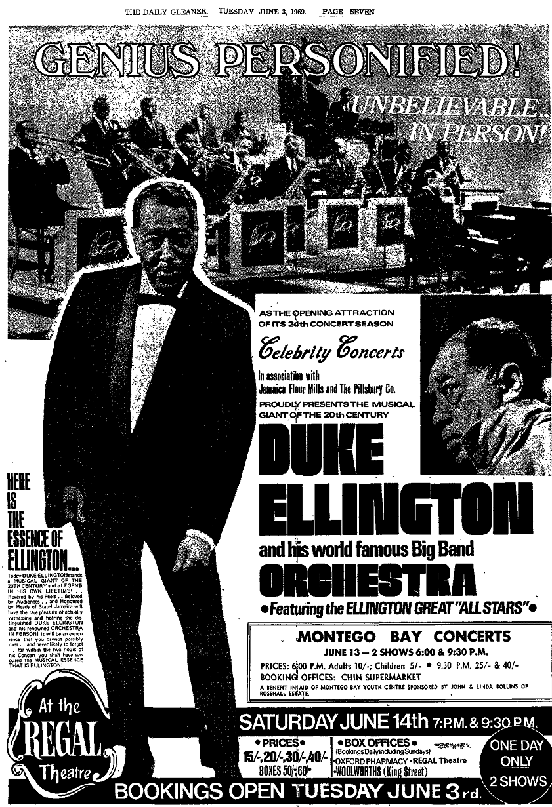
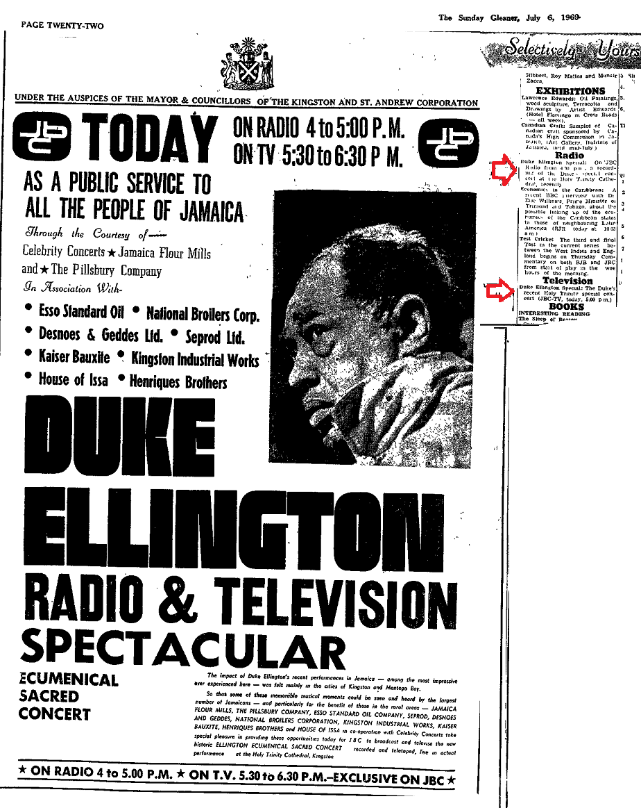

|
1969-05-25 p.1 |
Big announcement with pictures:
"...first performance in Montego Bay on Friday June 13; and then come to Kingston for performances on Saturday June 14.
|
|
1969-05-30 p.7 |
Four paragraph announcement
- Ellington concerts to aid charities The Montego Bay Youth Centre and Operation Friendship.
First performances to be given at the Palladium Theatre, Montego Bay, Fri. Jue 13 at 6 and 9:30 pm
Big advertisement
-for Kingston, Sat. June 14, Regal Theatre, 7:00 and 9:30 p.m.;
-for Montego Bay, Fri. June 13, 6:00 and 9:30 p.m.
|
| 1969-06-03 p.7 |
Big advertisement:
- "Genius Personified"
- "Unbelievable in Person!"
- Montego Bay concerts:
- 6:00 Adults 10/-; Children 5/-;
- 9:30 25/- and 40/-
- Kingston concerts:
- 15/-, 20/-, 30/-, 40/-
- Boxes 50/-, 60/-
- Quarter page ad:

(Click to open full size in another window)
|
| 1969-06-04 p.6 |
Report of news conference held Sunday evening at the House of Chen, Knutsford Boulevard, Kingston, by representatives of Jamaica Flour Mills Ltd. and the Pillsbury Company, the Kingston concert sponsors.
Impresario Stephen Hill of Celebrity Concerts spoke, named the Montego Bay concert sponsors as John and Linda Rollins and announced a Sunday sacred concert at the Roman Catholic Cathedral.
Patrons named were - Their Excellencies the Governor General Sir Clifford Campbell
- Lady Campbell
- Prime Minister the Rt. Hon. Hugh Shearer
- Minister of Finance and Planning the Hon. Edward Sears
- Leader of the Opposition, Michael Manley
Others present included - Jamaica Flour Mills Controller Les Hanson
- JFM's assistant manager Douglas Wynter
- United States Embassy Public Relations Officer Homer Gaynes
|
| 1969-06-06 p.7 |
Small ad
|
| 1969-06-06 p.7 |
- Big ad similar to 1969-06-03
- 9 paragraphs of promotional publicity under the heading Merry-Go-Round
|
1969-06-08
pp. 21 and 31 |
About 30 paragraphs of publicity
|
| 1969-06-10 p.22 |
Announcement: - The K.S.A.C. Council approved a motion June 9 that Ellington be presented with the keys to the city on June 16
- Mentions Ellington was expected to perform at the National Stadium following the presentation
|
| 1969-06-11 p.7 |
- 1958 photo of Duke with Her Majesty Queen Elizabeth II
- Caption announces he would perform "a Royal salute to the British Queen."
|
| 1969-06-12 p.2 |
"The renowned (sic) Duke Ellington and his All-Stars Orchestra came in at Kingston by KLM jet yesterday for the Jamaica leg of a Caribbean tour...
Yesterday on his arrival at the airport a Scroll of Friendship was presented to him by Mr. Fred Wilmot on behalf of the Jamaica Tourist Board."
Among those welcoming the Duke and his band were - Mr. Stephen Hill of Celebrity Concerts
- Mrs. Hill
- Mrs. Jean Smith, Cultural Representative of the Ministry of Finance
- Sonny Bradshaw
- Buddy Pouyatt
. "Eighteen members of the band came in yesterday and four others are expected to join them later.
They have already played in Port-of-Spain and Georgetown..."
|
| 1969-06-12 p.30 |
"Profile of Duke Ellington," 8 paragraphs by Harry Milner about speaking with Duke.
|
| 1969-06-12 p.30 |
Photo of Mrs. Johnny Hodges and Miss Shirley Witherspoon receiving corsages from the reception committee at the Palisadoes airport. Mrs. Dorothy Hill, the impresario's wife, is in the photo also, as well as two unidentified lades from the Jamaica Tourist Board.
|
| 1969-06-13 p.7 |
Two large ads:- For the 4 Friday and Saturday concerts
- Inviting citizens to a civic reception and presentation of Keys of the City to Duke Ellington at the National Stadium Monday June 16 at 6 p.m.
|
| 1969-06-13 p.6 |
Large ad for the 4 Friday and Saturday concerts in which Duke dedicates them to Jamaican leaders Sir Alexander Bustamente and Norman Manley.
|
| 1969-06-13 p.7 |
Reuters wirestory datelined Port-of-Spain, Trinidad June 9: - Ellington attended a reception June 8 at the Trinidad country club in Port-of-Spain
- Ellington was accompanied by band members
- they listened to the Pan Am Jet North Stars steel band play Poet and Peasants and Rhapsody in Blue
- Duke was given their album
- Ellington "jumped" to calypso music played by the steel band
- Later in the day, he put on two shows at Queen's Hall to support a move to build a new hospital.
|
| 1969-06-13 p.13 |
Report:- Rt. Rev. Cyril Swaby, Anglican Bishop of Jamaica, His Grace the Most Rev. John J. McEleney, Roman Catholic Archbishop of Kingston, the Rev. Stanford Webley, Executive Secretary of the Jamaica Council of Churches, and Rabbi Bernard Hooker, Spiritual Leader of the Jewish Community met Tuesday at Church House, Caledonia Avenue, Kingston, and gave their approval and support to Ellington's Ecumencial Sacred Concert to be performed on Sunday at Holy Trinity Cathedral, North Street, at 5:00 p.m.
- Heads of churches are asking ministers to bring the concert to the attention of their church members
- The concert sponsors, Mr. Stephen Hill of Celebrity Concerts in association with Jamaica Flour Mills and the Pillsbury Company, agreed to donate the proceeds to the Churches Advisory Bureau and to Operation Friendship
|
| 1969-06-14 p.28 |
- Report datelined Gleaner Western Bureau, Montego Bay, S.J., June 13:
- John Rollin's private jet brought
- Ellington
- Tom Whaley
- Mr. and Mrs. Cress Courtney
- Rose Hall Ltd. managing director and Ellington's Montego Bay concert sponsors Mr. and Mrs. Rollins
- The band arrived by Pan American flight from Kingston, including Mercer, his wife and daughter Gaye.
- After a short rest at Spring Farm, where Duke was staying, a motorcade was formed outside the Carlyle Beach Hotel and went to Charles Square for a civic reception at 5 p.m.
- On an improvised platform on the first floor of the burnt-out Parish Council building, Montego Bay's mayor, Councillor Dudley Kassin, formally welcomed Duke to the city while the crowd clapped and shouted a welcome from the square below.
- Five more speakers welcomed him and thanked Mr. and Mrs. Rollins for their generosity in sponsoring concerts.
- Parish Council secretary Mrs. Dahlia Clarke then read an official address to Ellington on behalf of the the mayor and council. The crowd cheered when Duke kissed her.
- Ellington and his entourage then went to the Palladium Theatre for the 6 o'clock concert.
- The first concert is reviewed on the same page:
- The audience was not more than 600 people
- The band wore colourful dashakis
- Duke wore white pants, blue socks, a long sleeved blue shirt and brown shoes (?)
- The concert was short, lasting 70 minutes, and included
- Passion Flower
- Soul Tall (sic)
- The Bluebell African (sic)
- I'm Beginning to See the Light
- In My Solitude
- In A Sentimental Mood
- Battle Royal (sic)
- A Drum is a Woman
|
| 1969-06-15 p.2 |
- What's on Today lists "Duke Ellington Concert at R C Cathedral North Street" at 5 p.m.
- Evening mass was pushed back from 6 o'clock to 7 o'clock to accommodate the concert
- Announcement: The Mayor, Councillor Eric Bell, would present the Keys of the City of Kingston to Ellington in a civic ceremony at the National Stadium commencing at 6 p.m.
- The KSAC councillors and their wives were to be presented to Duke and a musical salute was to be given by the Jamaica Military Band.
- Ellington and his orchestra were then to give a public concert at the stadium, or if it rained, in the National Arena.
- The mayor invited all the citizens of KSAC to the ceremony
- All the headmasters and headmistresses of the local schools were asked to allow as many children as possible to attend since special seats would be provided for them.
|
| 1969 06 16 p.2 |
What's on Today lists "Duke Ellington Concert" at 3:30 p.m. at the National Stadium.
|
| 1969 06 16 p.4 |
- Photo of Duke at the Friday reception in Montego Bay with
- Mr. and Mrs. Rollins
- Mayor Dudley Kassin
- the Hon. Walter Fibicher, Custos of St. James
- Mr. R.C.MacFarlane, M.P.
- Long story about the reception, dated June 13
|
| 1969 06 19, p.28 |
"The Duke Leaves
Duke Ellington and his All Star Band left Kingston by air yesterday for Miami after a week of engagements in the island.
The Duke gave concerts in Montego Bay and Kingston and was presented with the Key to the City by the Maryor Councillor Eric Bell.
The Duke gave a sacred concert in the Holy Trinity Cathedral on Sunday. He also gave a concert at the National Stadium
after the reception at which he was presented with the Key to the City."
|
| 1969 06 29 p.22 |
"Selectively Yours" column:
Television
"DUKE ELLINGTON SPECIAL (JBC-TV, Sunday, July 6, 5:30 p.m.)
The JBC's cameras and microphones will bring into your living rooms, the recent Duke Ellington concert at the Holy Trinity Cathedral."
|
| 1969 07 06 p.22 |
- Radio listing:
Duke Ellington Special: On JBC radio from 4:00 pm, a recoding of the Duke's special concert at the Holy Trinity Cathedral recently.
- Television listing:
Duke Ellington Special: The Duke's recent Holy Trinity
special concert (JBC-TV, today, 5:00 pm).
- Quarter page ad:

(Click to open full size in another window)
|